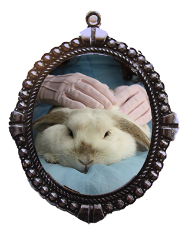
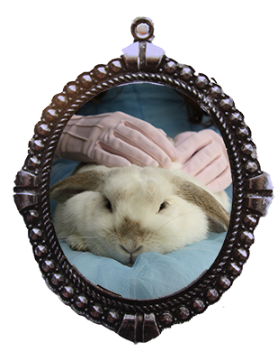

Characters
The famous characters are back featuring Jess, Charlie the fish and Gerry the white rabbit. The adventures of Jess and The Tea Party is coming to the live screens.
Premiere 26th August
 

Setting
The setting of The Tea Party is being filmed in Taranaki, New Zealand